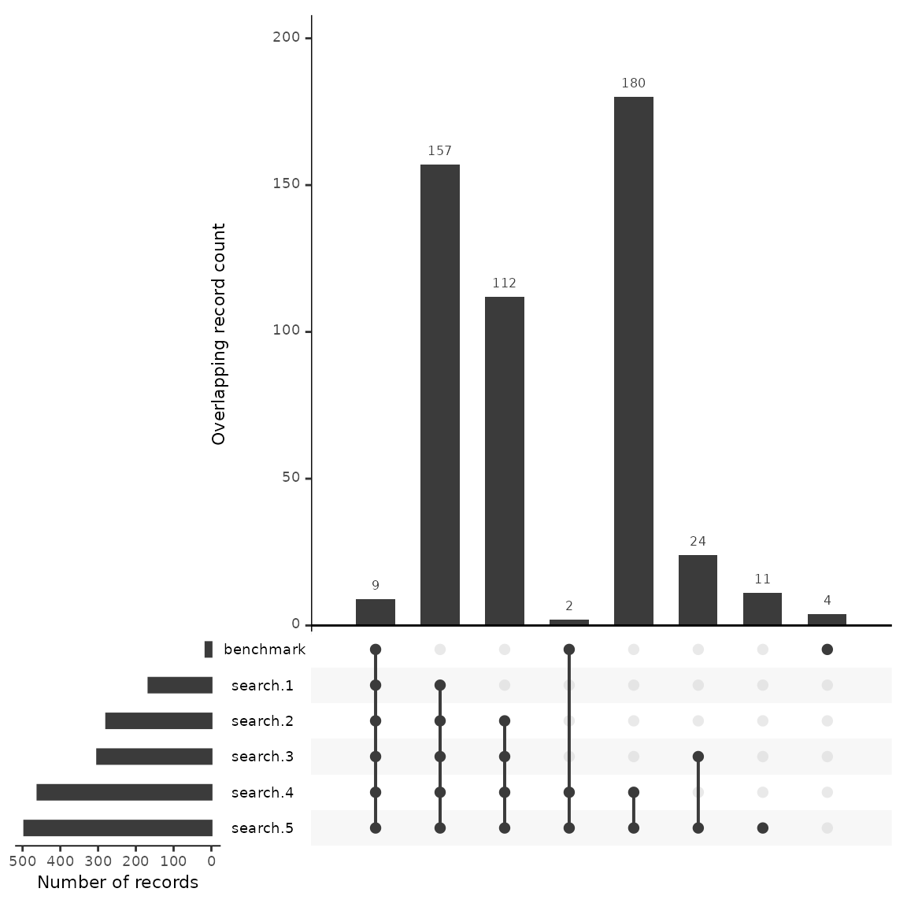

Benchmark Testing
2026-05-13
Source:vignettes/citesource_new_benchmark_testing.Rmd
citesource_new_benchmark_testing.RmdAbout this vignette
When estimating the comprehensiveness of a search, researchers often compile a list of relevant studies — benchmark studies — and evaluate whether their search strategy retrieves them. While benchmarking is an important step in testing search sensitivity, the process can be time consuming when multiple string variations are being compared.
This vignette demonstrates how CiteSource can speed up benchmarking, particularly when comparing variations of search strings or search strategies. By tagging each set of results with source and label metadata, CiteSource lets you see at a glance which strings found which benchmark studies and where overlap occurs.
Installation and setup
#install.packages("CiteSource")
library(CiteSource)Import citation files
In this example we are comparing results from five different search
strings, all run in Web of Science. Each string is tagged as a separate
cite_source. The benchmark file is given its own source tag
so it can be identified in the analysis.
file_path <- "../vignettes/new_benchmark_data/"
citation_files <- list.files(path = file_path, pattern = "\\.ris", full.names = TRUE)
citation_files
#> [1] "../vignettes/new_benchmark_data//benchmark_15.ris"
#> [2] "../vignettes/new_benchmark_data//search1_166.ris"
#> [3] "../vignettes/new_benchmark_data//search2_278.ris"
#> [4] "../vignettes/new_benchmark_data//search3_302.ris"
#> [5] "../vignettes/new_benchmark_data//search4_460.ris"
#> [6] "../vignettes/new_benchmark_data//search5_495.ris"Assign custom metadata
imported_tbl <- tibble::tribble(
~files, ~cite_sources, ~cite_labels,
"benchmark_15.ris", "benchmark", "benchmark",
"search1_166.ris", "search 1", "search",
"search2_278.ris", "search 2", "search",
"search3_302.ris", "search 3", "search",
"search4_460.ris", "search 4", "search",
"search5_495.ris", "search 5", "search"
) |>
dplyr::mutate(files = paste0(file_path, files))
raw_citations <- read_citations(metadata = imported_tbl, verbose = FALSE)
#> Note: the following cite_label value(s) are not in the standard vocabulary (search / screened / final): benchmark. Phase-analysis functions expect these exact labels.
#> Importing files ■■ 3%Deduplicate and create data tables
unique_citations <- dedup_citations(raw_citations)
#> formatting data...
#> identifying potential duplicates...
#> identified duplicates!
#> flagging potential pairs for manual dedup...
#> 1716 citations loaded...
#> 1217 duplicate citations removed...
#> 499 unique citations remaining!
n_unique <- count_unique(unique_citations)
source_comparison <- compare_sources(unique_citations, comp_type = "sources")Review internal duplication
Before comparing strings, it is useful to confirm that internal deduplication ran as expected. The initial record table shows how many records were imported from each source and how many distinct records remained after duplicates within that source were removed.
initial_records <- calculate_initial_records(unique_citations)
create_initial_record_table(initial_records)| Record Counts | ||
| Records Imported1 | Distinct Records2 | |
|---|---|---|
| benchmark | 15 | 15 |
| search 1 | 166 | 166 |
| search 2 | 278 | 278 |
| search 3 | 302 | 302 |
| search 4 | 460 | 460 |
| search 5 | 495 | 495 |
| Total | 1716 | 1716 |
| 1 Number of records imported from each source. | ||
| 2 Number of records after internal source deduplication. | ||
Compare overlap with an upset plot
An upset plot visualizes overlap across multiple sources and shows the number of shared and unique records for every combination of sources.
plot_source_overlap_upset(source_comparison, decreasing = c(TRUE, TRUE))
#> Plotting a large number of groups. Consider reducing nset or sub-setting the data.
Of the 15 benchmark articles, all but 4 were found across the five searches. Looking at the plot, search 4 and search 5 have the largest result sets (close to 500 each) but contribute only 2 additional benchmark articles beyond what the other strings find. A researcher might weigh whether that additional coverage justifies the extra screening burden, or whether the energy is better spent refining the other strings to capture those 2 articles.
Searches 2 and 3 do not contribute any unique benchmark articles. While the data may suggest dropping them, there are reasons to be cautious — benchmark sets can themselves be biased (e.g., drawn from prior reviews with a narrow geographic focus), so strings that add no benchmark hits may still contribute relevant literature not represented in the benchmark set.
Review benchmark coverage with a record-level table
The record-level table shows exactly which benchmark articles were found by which strings, making it easy to identify the 4 articles that no string captured.
unique_citations |>
dplyr::filter(stringr::str_detect(cite_source, "benchmark")) |>
record_level_table(return = "DT")Detailed source contribution table
The detailed record table provides a statistical summary of each string’s contribution — records imported, distinct records after deduplication, unique records, non-unique records, and percentage contributions.
detailed_records <- calculate_detailed_records(unique_citations, n_unique)
create_detailed_record_table(detailed_records)| Record Summary | |||||||
| Records Imported1 | Distinct Records2 | Unique Records3 | Non-unique Records4 | Source Contribution %5 | Source Unique Contribution %6 | Source Unique %7 | |
|---|---|---|---|---|---|---|---|
| benchmark | 15 | 15 | 0 | 15 | 0.9% | 0.0% | 0.0% |
| search 1 | 166 | 166 | 0 | 166 | 9.7% | 0.0% | 0.0% |
| search 2 | 278 | 278 | 0 | 278 | 16.2% | 0.0% | 0.0% |
| search 3 | 302 | 302 | 0 | 302 | 17.6% | 0.0% | 0.0% |
| search 4 | 460 | 460 | 0 | 460 | 26.8% | 0.0% | 0.0% |
| search 5 | 495 | 495 | 11 | 484 | 28.8% | 100.0% | 2.2% |
| Total | 1716 | 8 499 | 11 | 1705 | NA | NA | NA |
| 1 Number of raw records imported from each database. | |||||||
| 2 Number of records after internal source deduplication. | |||||||
| 3 Number of records not found in another source. | |||||||
| 4 Number of records found in at least one other source. | |||||||
| 5 Percent distinct records contributed to the total number of distinct records. | |||||||
| 6 Percent of unique records contributed to the total unique records. | |||||||
| 7 Percentage of records that were unique from each source. | |||||||
| 8 Total citations discovered (after internal and cross-source deduplication). | |||||||
Exporting for further analysis
# Export deduplicated results as CSV, RIS, or BibTeX
#export_csv(unique_citations, filename = "citesource_benchmark_export.csv")
#export_ris(unique_citations, filename = "citesource_benchmark_export.ris", source_field = "DB", label_field = "C5")
#export_bib(unique_citations, filename = "citesource_benchmark_export.bib", include = c("sources", "labels", "strings"))
# Reimport a previously exported file
#unique_citations <- reimport_csv("citesource_benchmark_export.csv")
#n_unique <- count_unique(unique_citations)
#source_comparison <- compare_sources(unique_citations, comp_type = "sources")